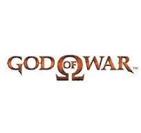

¿Porque me gustan los juegos?
Sinceramente desde temprana edad eh tenido una gran curiosidad por los juegos, desde que vi por primera vez el mario 64 podria ser, ya que cuando era pequeño no me atraia la television debido a que creia que no era divertida en cambio la posibilidad de controlar un personaje y tener control de desiciones me parecia una gran opcion a comparacion del televisor, bueno otro punto seria el hecho que no podia utilizar la television ya que mis familiares mayores se la pasaban usandola.
